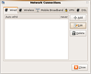
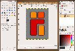
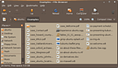
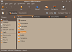
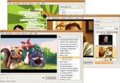
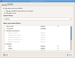
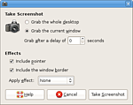
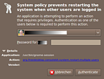
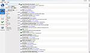

Intrepid Ibex
Die Ubuntu Version 8.10 trägt den Namen "Intrepid Ibex" (unerschrockener Steinbock) und ist am 30.10.2008 erschienen, der Support wurde am 30. April 2010 eingestellt.
Eine ins Deutsche übersetzte "Intrepid Update FAQ" findet man im Ikhaya. Details zu den Problemen mit Intrepid kann man in den Release Notes  nachlesen.
nachlesen.
| Ubuntu 8.10 | |
| Basisdaten | |
| Codename: | Intrepid Ibex |
| Deutsche Übersetzung: | Unerschrockener Steinbock |
| Status: | nicht mehr unterstützt |
| Angekündigt am: | 20. Februar 2008 |
| Erschienen am: | 30. Oktober 2008  |
| Unterstützt bis: | 30. April 2010 |
| « Zeitleiste » | « 8.04 LTS ... 8.10 ... 9.04 » |
Neuerungen¶
Allgemein¶
Kernel¶
Der Kernel 2.6.27 ist enthalten. Der Kernel 2.6.27 verspricht eine Reihe von Verbesserungen, insbesondere im Bereich von WLAN- und WebCam-Treibern. So wurden der GSPCA und UVC Treiber aufgenommen, die nun eine Vielzahl von Webcams der Hersteller Aiptek, Creative, Logitech und Philips unterstützen. Bislang mussten diese Treiber von Hand nachinstalliert werden. Zahlreiche weitere Informationen zum Kernel 2.6.27 finden sich im Ikhaya auf kernelnewbies.org sowie in Meldungen verschiedener Online-Magazine .
WLAN auf Kanälen 12 und 13¶
In Kernel 2.6.27 sind die Möglichkeiten sich auf den Kanälen 12 und 13 zu Verbinden bei manchen WLAN-Karten deaktiviert . Dieses Problem trifft für alle Treiber zu, die mit dem 802.11-Subsystem des Kernels arbeiten. Also z.B. beim Intel PRO/Wireless 3945ABG Chipsatz, der über das Kernelmodul iwl3945 betrieben wird. Dieser ist in vielen modernen Notebooks verbaut. Sollte man mit Intrepid WLANs nicht mehr finden, die man mit Hardy entdecken konnte, so schafft ein entsprechender Startparameter für das 802.11-Subsystem Abhilfe. Mit einem Editor muss die Datei /etc/modprobe.d/cfg80211 erstellt, und folgender Parameter eingetragen werden:
options cfg80211 ieee80211_regdom="EU"
Das läßt sich natürlich auch mit einem Terminal-Befehl sehr rasch erledigen:
echo 'options cfg80211 ieee80211_regdom="EU"' | sudo tee -a /etc/modprobe.d/cfg80211
Nach einem Neustart des Systems stehen nun, unabhängig vom verwendeten Treiber, alle Funkkanäle von 1 -13 zur Verfügung.
Xorg 7.4¶
Die neueste X-Server Version ist enthalten.
Automatischer Treiberdownload für Drucker¶
In jockey: soll eine Funktion implementiert werden, die fehlende Druckertreiber automatisch herunterlädt und installiert (mehr)
Home-Verzeichnis verschlüsseln¶
Unter Intrepid soll es möglich sein das Home-Verzeichnis eines jeden Nutzer auf einfachem Weg zu verschlüsseln (mehr).
Network-Manager¶

Der Network-Manager ist nun in Version 0.7 enthalten. Diese Version enthält nun viele bisher schmerzlich vermisste Funktionen. So können nun über den Network-Manager statische IPs genutzt werden, Verbindungen über mobile Telefone aufgebaut werden sowie auch DSL-Anschlüsse eingerichtet werden. Dies macht den Network-Manager nun zu einem kompletten Werkzeug um Netzwerkverbindungen zu verwalten.
GIMP 2.6¶

Praktisch in vorletzter Sekunde wurde die Aufnahme der Anfang Oktober erschienenen Version 2.6 des beliebten Bildbearbeitungsprogrammes GIMP beschlossen. Viele Details wurden überarbeitet und auch manch neue Funktion ist hinzugekommen.
Weitere Details zu den Neuerungen findet man hier auf ubuntuusers.de im Ikhaya oder in den Release Notes von GIMP 2.6.
OpenOffice.org 2.4.1¶
Aufgrund der für Intrepid zu späten Veröffentlichung von OpenOffice.org 3.0 wurde die Aufnahme von OOo 3.0 in Intrepid Ibex abgelehnt . Daher ist in Intrepid leider nur die Version 2.4.1 enthalten. Ein Update auf OOo 3.0 wird wohl über die Backports ermöglicht werden. Weitere Informationen zu dieser Entscheidung sind diesem Interview mit Colin Watson, einem von Canonical angestellten Entwickler, zu entnehmen.
Adobe Flash 10¶
Adobe Flash wurde in der Version 10 veröffentlicht. Flash geht nun deutlich performanter zur Werke, was man beispielsweise beim Abspielen von YouTube Videos merkt. Hier muss die CPU deutlich weniger arbeiten. Auch scheint die Zeit der Abstürze des Browsers aufgrund von Flash-Videos vorbei zu sein.
Des weiteren wurde das Ärgernis beseitigt, dass Flash-Animationen immer über anderen Elementen lagen, so lassen sich nun bspw. die Menüs auf asus.de korrekt bedienen. Auch das Abspielen von Videos im Vollbild klappt nun problemlos. Weitere Informationen zum Flash Player findet man auf pro-linux.de oder linux-community.de .
Ubuntu¶
Nautilus¶
Nautilus hat in der aktuellen Version einige sehr nützliche und lang erwartete Ergänzungen erhalten.

Kompakte Ansicht ("Compact View")¶
Die Ansicht verfügt nun über eine kompakte Ansicht ("Engere Ansicht"). Dateien und Ordner werden dabei in mehreren Spalten dargestellt. Für einzelne Ordner kann man diese Ansicht unter "Ansicht -> Enger" aktivieren. Alternativ kann man diese Ansicht über "Bearbeiten -> Einstellungen -> Ansichten -> Vorgabeansicht -> Neue Ordner anzeigen mit: Engere Ansicht" für alle Ordner festsetzen.
Tabs¶

Ordner lassen sich nun in Tabs öffnen, so wie man es beispielsweise von Webbrowsern gewöhnt ist. So lassen sich Dateien und Ordner per Drag&Drop verschieben ohne dass man weitere Fenster des Dateimanagers geöffnet haben muss.
Ein neues Tab kann man, wie in den meisten Browsern, durch die Tastenkombination Strg + T öffnen oder über das Menü "Datei -> Neuer Reiter".
Mülleimer mit Gedächtnis¶
Löscht man eine Datei aus Nautilus heraus, so wird sie üblicherweise nicht sofort gelöscht, sondern in den Mülleimer geschoben. Erst wenn man diesen leert, so werden die Daten von der Festplatte gelöscht. Bislang war es nicht möglich gelöschte Dateien oder Verzeichnisse aus dem Müll an ihren Ursprungsort wiederherzustellen. Man musste die gelöschten Daten von Hand an ihren ursprünglichen Platz schieben.
Mit GNOME 2.24 ist dies nun möglich. Öffnet man den Mülleimer, so kann man mit der rechten Maustaste auf eine Auswahl von gelöschten Daten klicken und dann mittels "Wiederherstellen" die Daten an ihrer ursprünglichen Position im Dateisystem wiederherstellen lassen.
Empathy¶
In GNOME 2.24 wurde Empathy als Standard-Programm zum Verschicken von Sofortnachrichten (Instant-Messaging) aufgenommen. Es verdrängt somit Gossip . Empathy beherrscht alle üblichen Protokolle wie ICQ, AOL, MSN und natürlich auch Jabber. Des weiteren sollen Audio- und Video-Gespräche mit Empathy möglich sein.
Ubuntu setzt jedoch nach wie vor auf Pidgin, das auch in Ubuntu Intrepid Ibex automatisch vorinstalliert wird. Ein voreiliger Umstieg auf Empathy wurde ausgeschlossen, um abzuwarten wie sich Empathy bewährt. Ob Empathy Pidgin in der auf Intrepid folgenden Version von Ubuntu ablösen wird, ist noch nicht geklärt.
Totem¶

Der Medienspieler Totem wurde um einige Funktionen erweitert. Das Multimediaframework GStreamer beherrschte schon länger die Möglichkeit Video-DVDs abzuspielen. Nun wurde diese Funktion endlich vervollständigt. Totem kann über Gstreamer nun auch DVDs mit Menüs abspielen. Bislang musste man dafür auf die Xine Bibliothek ausweichen.
Des weiteren wurde das YouTube-Plugin ausgebaut, über das man Videos von YouTube direkt über Totem abspielen kann. YouTube codiert seit einiger Zeit Videos mit dem hochqualitativen H.264-Standard. Dieser wird nun automatisch genutzt, wenn YouTube das Video in H.264 anbietet.
Als letztes wurden die Videostreams und Podcasts, die die BBC über den iPlayer anbietet in Totem integriert. Leider sind viele Videos nur aus Großbritannien zu erreichen, da die BBC nicht die Rechte besitzt solche Sendungen über das Internet weltweit "auszustrahlen". Die Audio-Podcasts sind jedoch komplett verfügbar.
Klänge¶

Die Möglichkeiten Klänge bei verschiedenen Aktionen in der Desktopumgebung wie z.B. beim Maximieren oder Minimieren eines Fensters, dem Leeren des Mülleimers oder beim Eingang einer E-Mail wurden vollständig überarbeitet. Unter
"System -> Einstellungen -> Audio ->Klänge"
kann man nun verschiedene Klang-Schemata auswählen (bislang nur zwei) und diese an die eigenen Bedürfnisse anpassen.
Screenshots¶

Mittels der
Druck -Taste bzw. der Tastenkombination
Alt +
Druck lassen sich Screenshots einer Anwendung bzw. des gesamten Desktops erstellen. Dahinter steckt die Anwendung gnome-screenshot, die man auch aus dem Anwendungsmenü über
"Anwendungen -> Zubehör -> Bildschirmfoto aufnehmen"
aufrufen kann. In GNOME 2.24 wurde die Anwendung erweitert, so dass man nun den Mauszeiger in einen Screenshot einbinden kann, des weiteren kann man auswählen, ob der Rahmen um ein Anwendungsfenster auf den Screenshot kommen soll.
Gastzugang¶
Es soll per Voreinstellung ein Gastzugang ohne Passwortabfrage konfiguriert sein. Der Gast-Nutzer erhält keinen Zugang zu dauerhaft gespeicherten Daten (Programmdateien, Home-Verzeichnisse etc.). Die Nutzung von Programmen wie z.B. dem Firefox für einen temporären Internetzugang ist jedoch möglich.
Mehrbenutzerbetrieb¶

Linux ist von Haus aus auf den Betrieb mit mehreren Benutzern ausgelegt. Man kann nicht nur mehrere Benutzer anlegen, die jeweils ihre eigenen Einstellungen und Daten besitzen, sondern auch gleichzeitig mehrere Benutzer im selben System anmelden und dann zwischen den Benutzern hin- und her schalten.
Hier wurde jetzt verbessert, dass ein Benutzer den Rechner nicht mehr abschalten oder neu starten kann, wenn noch andere angemeldet sind. Möchte man dennoch den Rechner abschalten, so muss ein Benutzer mit administrativen Rechten diese Aktion autorisieren.
Kubuntu¶
In Kubuntu 8.10 wurde ausschließlich KDE 4.1 als Desktop verwendet.
Adept¶
Kubuntu 8.10 enthält die überarbeitete Version des Paketmanagers Adept 3. Das Programm wurde auf KDE 4 portiert und auch von der Oberfläche komplett überarbeitet.
KWin¶
In Kubuntu Intrepid Ibex wird Compositing in KDE's Fenstermanager KWin standardmäßig aktiviert sein. Als Fensterwechsler ( Alt + Tab ⇆ ) wird die "3D Fenstergalerie" ("CoverSwitch") verwendet.
- Erstellt mit Inyoka
-
 2004 – 2017 ubuntuusers.de • Einige Rechte vorbehalten
2004 – 2017 ubuntuusers.de • Einige Rechte vorbehalten
Lizenz • Kontakt • Datenschutz • Impressum • Serverstatus -
Serverhousing gespendet von